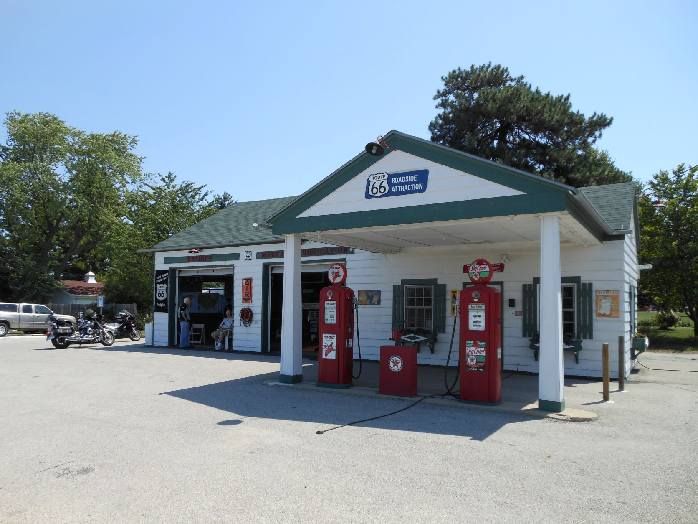
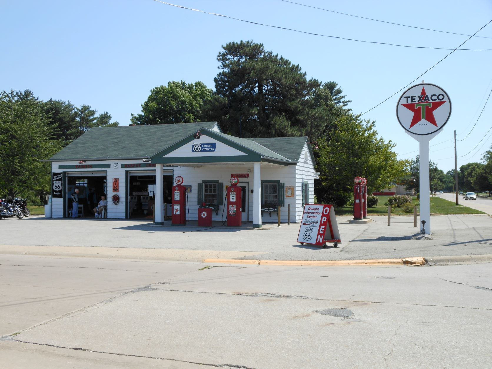
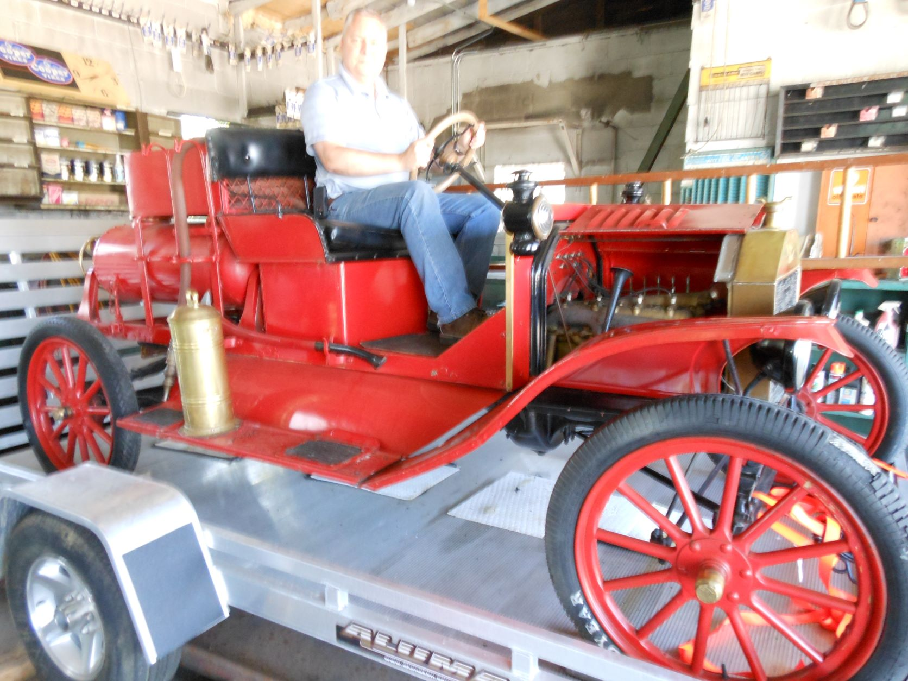
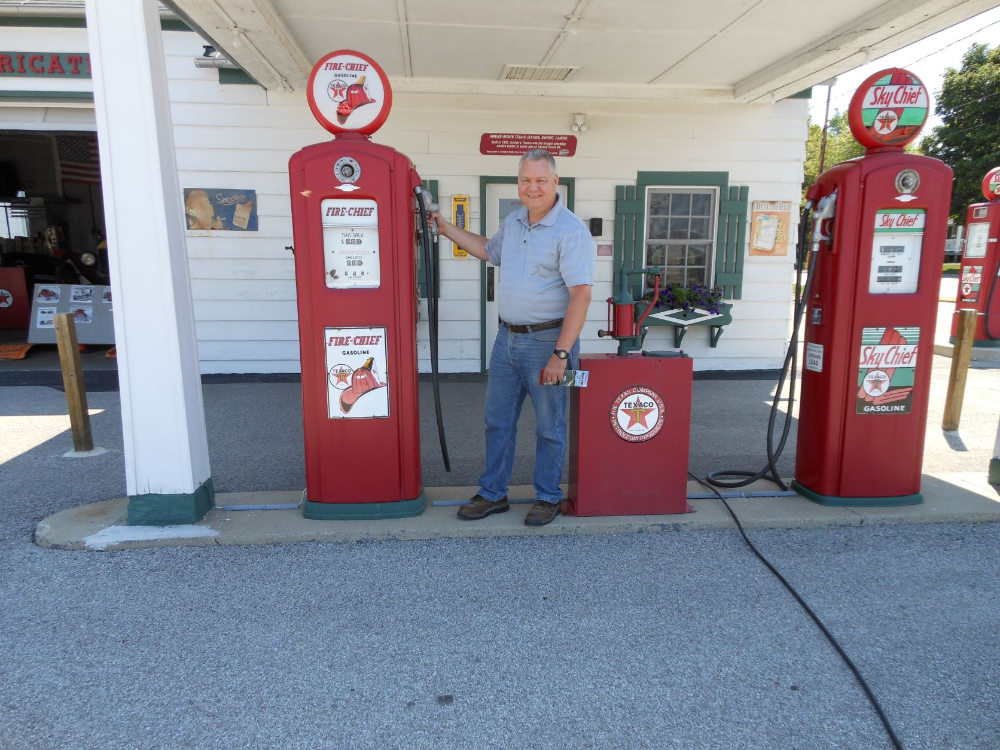
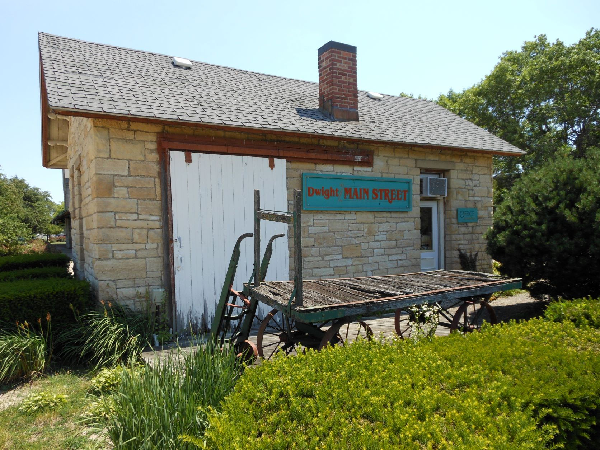
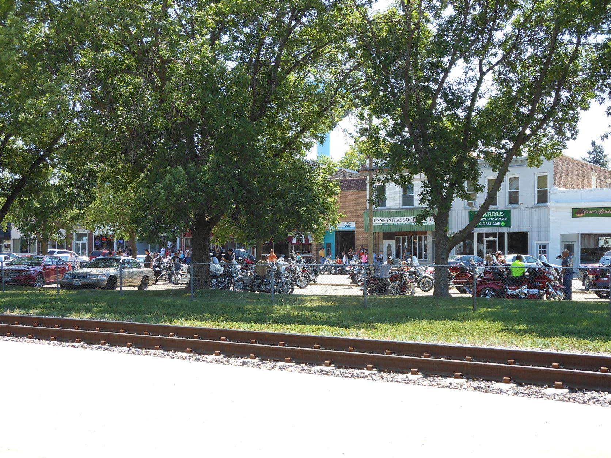
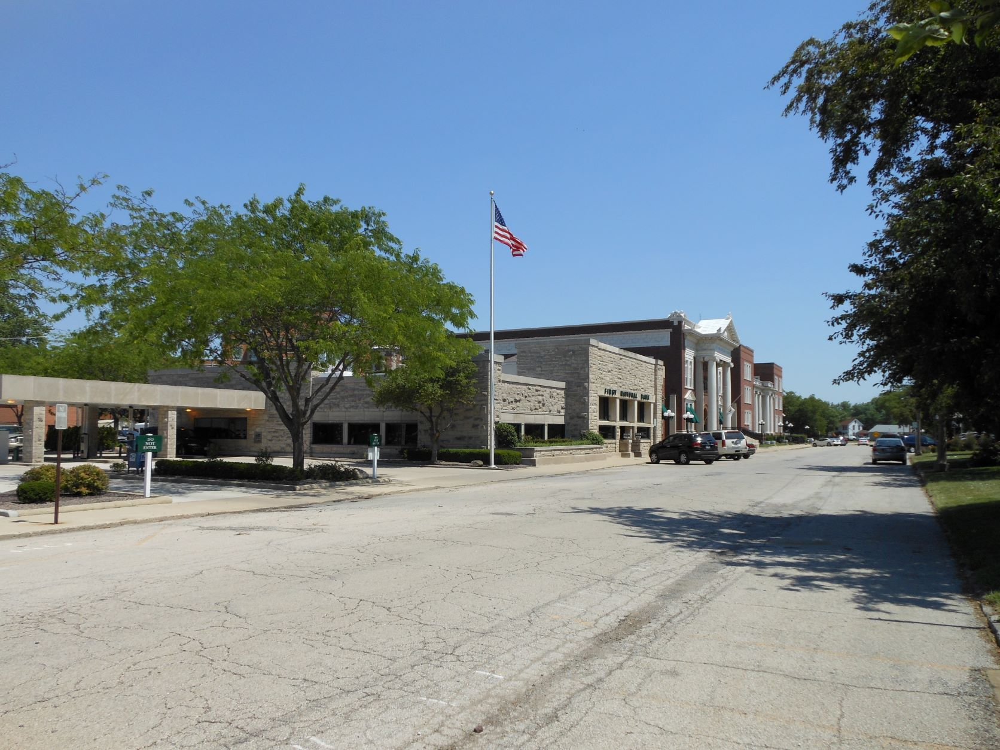
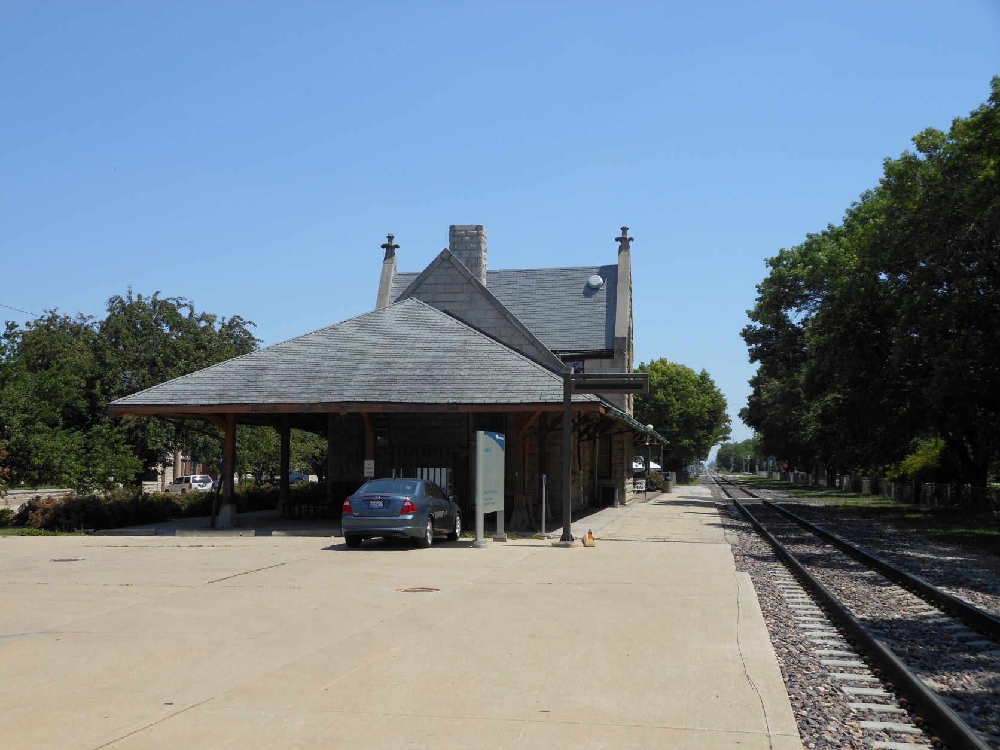
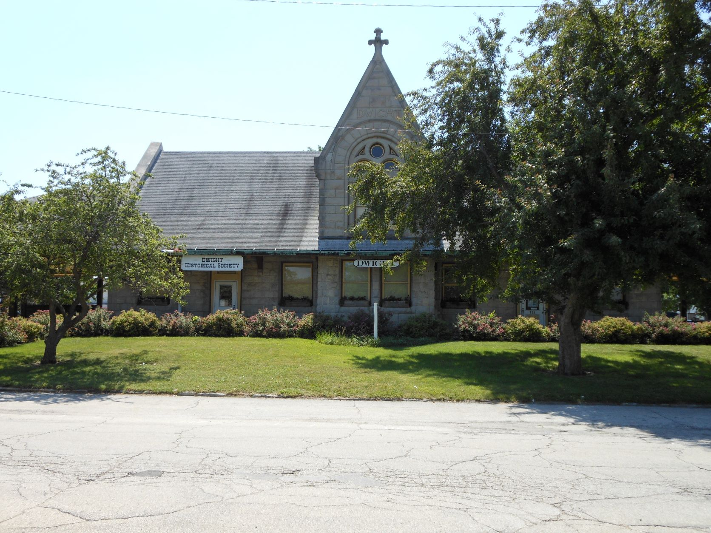
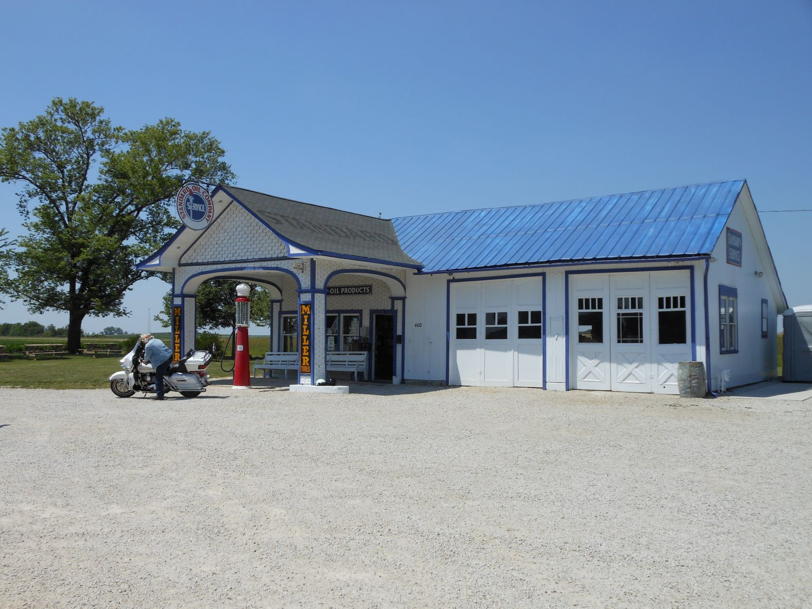

June 9, 2012 - Dwight, IL, Odell, IL and the road to Pontiac, IL

Dwight, IL - Old Texaco gas station

Dwight, IL - Old Texaco gas station

Me driving the antique fire engine

Dwight, IL - Old Texaco gas station gas pumps

Dwight, IL - Old rail freight depot

Dwight, IL - Sunday ride - nice day

First National Bank building designed by Frank Lloyd Wright

Dwight, IL - Dwight Chicago & Alton Railway Station

Dwight, IL - Dwight Chicago & Alton Railway Station

Odell, IL - Old Standard Oil Gas Station

On the road to Pontiac, IL
On the road to Pontiac, IL